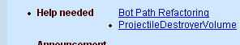

Wiki Development
This page discusses new technical features for the Wiki system the site runs on.
Pending Enhancements
See /Archive for existing enhancements.
To do:
- Make generated pages validate as HTML 4.01. (Wookee's output seems to be okay, just a couple of links using unescaped "&" characters and some stuff around the ad
<iframe>aren't.) - Fix the subpage-with-parentheses page title bug
- Add a link to the login page at least at the bottom of every page (next to the Preferences link).
Links to pages that don't exist yet are not put in [brackets like this] but underlined (though not clickable).
Tarquin: You mean just the "?" is clickable? I presume you're just giving them a class & using the glocal stylesheet?
Mychaeel: Yes. I did that on JDN.
Get rid of the [brackets] around external links and replace them by a small prefixed icon instead. Does anybody have a concrete idea for that icon?
Tarquin: How about the little globe icon I put in the ScreenWebPage icon?
Mychaeel: Sounds good. I'll try that.
Tarquin: There's a really nice world graphic for Chimera: http://www.mozilla.org/projects/chimera/
- Bob_The_Beheader: The link to Chimera is dead.
Game Logo Smileys
Game logos to be included in a smiley-like manner are a great idea. Could also be used next to the usual UT or UT2003 on class pages, if only to spiff them up visually.
Basically all we need to add that feature are small (say, 16x16) GIF files with transparent background showing the respective game logos and named ut.gif, ut2003.gif, devastation.gif and so on. Then we'd only have to drop them into a special directory via FTP and we'd be good to go. Anybody up for the task of creating those icons?
Icons made so far (16x16, Alpha-channel PNG)
![[P2]](images/p2.png)
![[PariahLogo]](images/pariahlogo.jpeg)
NOTE: IE for Windows does not support PNG alpha channels correctly. So you'll get "ugly but functional" until you change to another browser.  (IE for mac (5.0+), however, does support alpha channels. So does Safari for all you mac users out there and of course also mozilla, netscape and everything else gecko based. See [PNG-supporting Browsers] for an (hopefully) up-to-date list of which browsers support png)
(IE for mac (5.0+), however, does support alpha channels. So does Safari for all you mac users out there and of course also mozilla, netscape and everything else gecko based. See [PNG-supporting Browsers] for an (hopefully) up-to-date list of which browsers support png)
Syntax
I'm thinking we need two types of syntax:
- for class headers, simplest thing is to parse the "UT2003 ::", and prepend the logo.
- elsewhere in text, something like ::UT2003::
Mychaeel: Hrm. Please explain why it has to be something as strange as "colon, colon, name, colon, colon." I'm already not exactly thrilled of that pseudo-C++ "name, colon, colon" that is being used in class path headers, but I can live with it. – If it's just for inserting the game logos, why not simply drop them in the "emoticon" directory and reference them as :ut2003: or :devastation: as originally suggested above? It's not even required to change anything about the script for that.
Tarquin: Fair enough  it was just a rough suggestion. What would you prefer for class headers, BTW?
it was just a rough suggestion. What would you prefer for class headers, BTW?
Timestamp Placeholder
CH3Z: here's another idea for the Wiki code... a timestamp function, unless there already is one and i missed it. nite
EntropicLqd: Timstamp function? Like the one displayed on the recent changes page?
Mychaeel: I think he means along the lines of the convenient ~~~ shortcut – just a placeholder that is replaced by the current date and time upon saving a page. Could be done; I'll try to keep it in mind until next time I'm changing the script.
Tarquin: let's just copy Wikipedia syntax: 3 ~ is name; 4 ~ is name + date
Mychaeel: Where a timestamp is needed frequently a name tag won't (like on a [Developer Journals]? page). I'd rather introduce, for example, %%% for a timestamp (anywhere in a paragraph).
Tarquin: Fair enough
CH3Z: hehe i'm such a nube. I never causght that 3 ~ bit since it changes the code on exit. Can you imagine how hard i would have been working if it let me put in the name i tried to use when i registered: ][C1][C|H|3|Z all that with 3 ' before and and after and the colon.
ZxAnPhOrIaN: That sounds good. I think that ``` would be better because it uses the same key to to ~~~ but you don't use shift. it would be much easier to access.
Tarquin: On YOUR keyboard, maybe
ZxAnPhOrIaN: maybe not!
Wormbo: Actually ` has weird effects on German keyboards: You have to press another key to make it appear and you still have to use the shift key. ~ happens to be on the same key as +, but us Germans have to press AltGr (right alt key) to use it. Choosing characters for these things isn't as easy as you might think.
ZxAnPhOrIaN: You live in germany wormbo too (I know Mych lives there)?
Pop-Up Search Window
Mychaeel: Something I'd find very handy, especially regarding the Wiki-like lack of a tight convention for naming pages, would be another link on the page editing pages that opens a small pop-up window with a page search field (and potentially the option to either search page titles or do a full-text search). That'd make it so much easier to create proper links to existing pages...
Tarquin: I'm starting to think a search on just page names would be good as a pop-up. Full searches are taking longer as the site grows.
Anchor Links
(moved discussion... is it worth keeping?)
Mychaeel: I've been wondering whether there could be a Wiki-like way to link to a particular header on a page. They're already automatically given anchors (for the QuickNav menu), but those anchors change when new headers on the same or any higher level are inserted before a header. Any thoughts?
Tarquin: You mean something like [[MyPage#2.1]] would jump to that anchor? Update: there's a patch for this on UseModWiki. Since our pages already have the anchors built-in, this should be simple. I'll look into it once the CVS is up
Githianki: Maybe I suck at properly organizing and thus desire these even though everyone seems to have gotten by without them, but they seem like they'd be really useful.
Wormbo: The problem with Wiki pages is, that they might be changed radically. Anchor links wouldn't point to the correct location anymore if someone inserts a new heading at the top of the page.
Mychaeel: ...and if you need anchor links, you'd better start refactoring a page into multiple smaller, more specialized ones (or a page with multiple subpages) to start with.
Githianki: so maybe this is way off since I don't know how anchors are implemented at the coding end but if you eliminate resequencing anchor refs (which seem to be numbers based on what I am hearing), then the links will be valid unless you change the headings or delete them? I mean if you tie a value to a heading then don't change the value. You'd need to change the nav bar to sequence anchors in a non numerical order, perhaps by doc position. I don't know if the arnchors themselves are resequenced each edit to go 0..n or whether new anchors just get the next higher value than the last anchor/header placed. Um. This sounds stupid doesn't it? Basically I am saying, (if there is a facility for renaming links throughout a wiki, Whosit→Whatsit) when a heading is created assign it an anchor token that comprises both its text value for links and its position value on the page it appears for quicknav. The text is treated internally as a link (so it shouldn't matter where it appears in a doc), and its position value can be updated if it is moved around since that is only a local ref for quicknav. When a subheader is edited the text value (being treated as a link) would propagate its changes to all docs linked to it. This requires a type of doc path and costs overhead but do these things change so much all at once as to be a burden? Does any of this sound like more than drivel? Obviously this requires code support and depends on the presence or ability to make present a link renamer function (essentially a page renamer that updates all references in the wiki). Kill me if I deserve it
Mychaeel: The whole HTML code is generated from the Wiki markup source each time a page is viewed. At that time the header anchors are generated, and so is the "Quick Navigation" menu where they're (currently) exclusively used. – We could introduce a special "anchor" markup tag, of course, or automatically generate anchors from the text of headings (something like #anchor_links for the previous heading, for instance).
El Muerte: just noticed this on the UDN, they simply use the heading text, a bit mangled ofcourse. So === My Heading: Bla would add an <a name="My_Heading_Bla"></a>. Although it would be an issue if you repeat the same header text. So maybe inherit the "parent" heading partially? Or, add a wiki tag to add anchors where ever you want: ^^MyAnchor^^ would create <a name="MyAnchor" title="#MyAnchor" href="http://link.to.the.anchor.for/easier/copying#MyAnchor">[^]</a>
Topic hierarchy
Do we need to give "topic hierarchies" – see Event for an example. Would it help people find their way around?
And do we need markup to make a different sort of CSS box to @@ ?
Problems
Edit/Renaming Collision
Mychaeel: I just noticed: While I was renaming some pages somebody had another page with links to those renamed pages open for editing. When he/she saved that page, the automatic link adjustment done by renaming the pages was undone on that page. – Instead, an "editing collision" error should occur, I believe.
New Templates
EntropicLqd: Is it just me or has the "cool blue" style sheet suddenly broken on IE? It feels like the style sheet is no longer available on the server.
Tarquin: we're down to 2 content stylesheets at the moment – see project skins
Legal: Using IE 5.5, b0rked completely, yes... 
Entropicqd: IE 5 seems OK although weird things happen when you edit text within the "text area" - it grows beyond the edge of the screen for some reason. IE 6 seems to be completely lost. I've taken to using the Phoenix browser for looking at the Wiki now to avoid these problems. It does the job but it's too slow to use all the time.
Tarq: I see what you mean in IE 6. The textbox grows by a few pixels each time you type, and then goes back to normal on a window resize. Not sure what to do about that, but I'll look into it. I don't have IE 5 – anyone know where I can download it?
ZxAnPhOrIaN: Ent, I have that same problem, i have IE6.0.2800.1106, to be exact!
Tarquin: FIX: turn off "Use 100% wide edit area (if supported)" in your prefs. I'll look into a better fix later.
CH3Z:THAT, ZxAnPhOrIaN, is what i was trying to relate to you at the sandbox. I saw the option when i registered my name, but don't see it anymore.(ok found it, "Selective Blindness" ty tarquin)
Advanced Search
Pingz: I don't think i've yet to look for information in the wiki by browsing categories. I pretty much use search exclusively. Try doing a search for the Trace function and see how many non-related results you get. Maybe some advanced search features can be added. Whole word only searches ( searching for Foo will not return FooBar ) and Boolean searches ( Foo AND Bar ) would do wonders. Maybe even add the matching word or phrase next to each link in the results list.
Mychaeel: The search returns those pages where most of the search terms matched first; so that effectively means it tries "and" first, and gradually falls back to "or" if it doesn't find anything.
Pingz: I guess then knowing if a result is an "and" or an "or" would be nice. Alot of my searches require "and" and the "or" results are just noise alot of the times. I enter multiple words into the search because i want a result with all those words. As it is now i then have to click thru links do a page find to see if the words i searched for are in the page at all... it's a frustrating process for finding information. Searching should be a very powerful tool within the wiki especially since things aren't always organized correctly. IMO the searching is not at the moment.
For example. I did a search just now with the words map, triangle, and count. The first result is Adding Polish To Maps. This page contains the word map and count, but not triangle. It was a waste of my time to check it and i would have been better off if i didn't get back any results.
I'm not trying to be a pain or nothing, but just trying to make the wiki a better tool for everyone.
Mychaeel: The search returns only the hits with the most matching words, first for page titles, then for the page content. So if the first returned page contained only two of your three search terms, that's as good as it gets in the following pages either.
If I get around to it, I'll think about improving the search function (which has already been vastly improved over the standard one in the unpatched UseMod Wiki script which doesn't even recognize multiple search terms). I don't think that'll happen anytime soon though.
Pingz: Here is an idea. What about using Google? Taking the same example from above and entering it into Google gives me exactly the results i want. Click [here]. You can easily replace the current search box with one that uses Google with the instructions [here]. You can also customize the results page some ( i think just coloring and adding the wiki logo ).
The advantages of using Google is great: lots of search options and highlighted results. The big downside is that the Google index is only updated about once a month... so results could be pretty stale.
Mychaeel: ...and outdated search results. And it's an external site.
Wormbo: A little suggestion for the search: Try searching for finding the local PlayerPawn, you'll be suprised at the uselessness of the search results although the correct page is somewhere there, too. The result for "finding the local PlayerPawn" is only the desired page, though.
As a result of this I have two suggestions: If the words appear in the exact order they were types in, a search result should get a higher priority and if the words appear in a heading this should probably also boost the priority of the result a bit.
Mychaeel: ...and if you remove the "the" from your query you'll notice how you just get a small handful of pages, with Netcode Idioms being in plain view. (The results listed before it are those where any of the search terms appear in the page title; so there.)
The search function would need some lexical analysis of the entire Wiki to be able to automatically give the "the" a low priority so that entering "finding the local playerpawn" doesn't return loads of pages with "the" in their title. I doubt that can be done with reasonable effort.
Mychaeel: Well... obviously the Wiki search function is a vital part of the site, and even though the way it's implemented right now represents a huge improvement over the original UseMod Wiki search functionality, it's still subpar for a site like this. The biggest problem lies in the ranking of the search results. Performance is not yet an issue, but might become one as the site grows and the search function becomes more complex.
I have some ideas how to algorithmically approach that problem, but to my chagrin and mild frustration I'm not going to have time to really wrap my mind around this during the next weeks until early October. Nevertheless, here are some rough notes (subject to change):
- Search function provides a means to limit the search to certain categories so that people can directly specify that they only want to get results for UT2003, for example. Naturally the list of category tags has to be cached somewhere so it doesn't have to be built from scratch each time the Search page is displayed.
- Automatic compensation for differences in American/British English spelling: The search engine is provided with a list of American/British English word pairs and internally "normalizes" both the search terms and the searched pages; so a search for "colour" would also find pages containing only "color."
- Page ranking is based on...
- Relative position of the individual search terms to each other. The page is scanned matching term by term, and for each term a ranking bonus is added depending on
- how many terms in the search term list have to be skipped from the last one to get to the next one (ideally: none), and
- how close the terms are to each other on the page (ideally: directly following each other).
- Absolute position of the search terms on the page (still in relation to the page length though). Each matching term adds a bonus to the ranking depending on its position in the page. The page title gets an extra bonus here.
- Distribution of the search terms on the page. For that, the algorithm could try to split the page in a row of "sections" of equal length and try to find the smallest section length where still every section contains at least one search term. The more sections are possible (that is, the smaller a single section may be), the higher the ranking bonus.
- Perhaps logical markup: Terms in headings count more (depending on the header depth). That'd involve some sort of markup parser in the search engine though which I'm not too fond about; but if the search engine is optimized by caching a keyword list for every page that's automatically updated when the page is saved, the page content could be simply piped through Wookee before saving it and Wookee could provide the parsed structural information that's required for this function.
- Relative position of the individual search terms to each other. The page is scanned matching term by term, and for each term a ranking bonus is added depending on
inio: Before anyone suggests it, back-reference-based ranking is off-limits, unless someone wants to work with Google to get a license for the PageRank (orig. Backrub) patent (which pretty much covers using back-references to rank results of a search in a document-reference network).
Non-Existant Pages
Mychaeel: I'm pondering something I've seen on [Everything2]: A link to a non-existant page doesn't directly open its edit page but performs a search on the page name's space-separated parts first and shows those results. It also gives the option to click a special link to actually create that page.
That patch would basically involve creating a magic page that explains all that, lists the search results and gives the actual edit link; and changing the script function that returns the "?" edit links to return a link to that magic page instead, somehow passing the desired page name as a parameter.
Tarquin: just seen in the script there's a $NotFoundPg – you can make requests for pages that don't exist go one particular page. As for the edit link to a non-existing page, having that go to plain text first is done on some wikis. Eg Dive in Os X. We could do it here, I suppose it depends on the balance between preventing n00b experiments and irritating power users
Categories
Tarquin: I'm thinking of adding an option to have the search results on category pages float right, a bit like the front page of [grubstreet]. It would mean that wiki.cgi receives the entire "magic" text as a string and stores it before inserting it in the output text variable – so there's another instance of it in memory. Is this a particular slowdown?
Mychaeel: There's so much stuff in memory especially from Wookee's side, I doubt it is a problem.
Site-Wide Bans
Mychaeel: Changed the banning mechanism of the Unreal Wiki after I found to my surprise that it only forbade edits, not access. Now it does.
Offline Readers/Bot Limiting
MythOpus: I'm not an expert at all this bot and offline reader stuff, but wouldn't it be possible to limit how many offline readers/bots are allowed on the server at any given time. Maybe if you install limitors then maybe you can 'un-ban' these things?
Tarquin: I seem to remember we thought the simplest thing would be a concealed link to a "I'm a robot, ban me!" page.
Mychaeel: In case that wasn't clear, one single offline reader firing requests as fast as it can is able to grind the servers to a halt. The incident a few days ago was such a case. It didn't even stop after it had been banned and only received "Forbidden" messages anymore.
That aside, you can't distinguish an offline reader from a legitimate browser – they both just request pages. And then, even if we could, any mechanism we could implement would have to be in the Perl script itself – and when an offline reader hammers the server with requests, it doesn't make much of a difference if the script then delivers a "You are banned" message or the actual page.
And I don't see the point in using an offline reader to harvest the Unreal Wiki. We're providing Offline Wiki after all.
MythOpus: OH I See.... That makes sese and I was wondering about that offline reader thing. How amny times does the offline Wiki get archives?
Mychaeel: That's all explained on Offline Wiki.
Banner Ads
GRAF1K: Has anyone else noticed that, in Mozilla 1.4.1 at least, when you scroll with the mouse wheel up and down around the banner ad it slides down off the page?
Gehn: I have noticed that exact thing. In fact after reading this posted I wanted to tell them about it and I had to reload the page because it did that slide thing.
Hierarchal markup
See /Tree markup
Document links
Tarquin: I'm pondering adding some [document links], however, I'm not sure how many browsers support them (in other words, Moz does, Opera probably does, but does IE? "Start", "Glossary" and "Help" should be the same across the whole wiki (Home Page, terminology and one of the wiki faq pages). What would be really cool would be a page that says "Next page" in wikisource generating a "Next" document link... I'll add it to my list of features for MOO.
Wormbo: Opera 7 supports them and I wish more pages would use them. IE has no fecking clue what you're talking about, though. 
Tarquin: Ok, I've added "Start", "Glossary" and "Help". If you can think of any other site-wide ones, let me know. Page-specific stuff like "next" and "previous" will probably have to wait until I rewrite the whole wiki engine
Wormbo: There's also "Index", "Content", "Search", "Copyright" etc. in Opera's document link bar. Are you going to add links for those as well?
Tarquin: Aren't "Index", "Content" and "Start" all the same? If not, tell me which pages to link to in those.
Sidebar
Wormbo: What's it with the percent links and the "bla" spam below the login link on the sidebar? The percent links only make the text smaller and you have to reload the page to get the original size back.
Tarquin: Oh crap. That was stuff I was testing with!!! Oops!!
Definition/unordered list display bug in Opera
Wormbo: I'm talking about this markup displayed in Opera 7.54:
- Something
- with different stuff
- More
- with more different stuff
- List
- this first list entry's bullet is in front of "List"
- this second list entry's bullet is where it belongs
It's nothing big, probably a bug in Opera. Leaving out the ":" is no option because that'd make the list part of the definition title and draw it accordingly.
Tarquin: On Opera 5 the first bullet is on the same line as "List".. but both bullets are one above the other, ie positioned correctly horizontally. It possibly even looks better like this!
Wormbo: Well, the way Opera 7.5x displays it obviously isn't correct:

|
Printer page layout
Wormbo: What about hiding the sidebar from the printed version of a page?
GRAF1K: That'd be nice, but are you sure it's worth doing? I don't know anything about that sort of thing, so I wouldn't know the work involved. The reason I ask is because I haven't printed anything from here in a couple years; browser bookmarks work just as well for me as printing a page.
Tarquin: Very easily done. I'll make a print stylesheet later this week.
Quick Navigation runs off the page
Try to use Quick Navigation on Static Mesh Package/Index and you'll note that the list runs off the screen in 1280x1024. I recommend a drop-down list box (rather than the existing javascript list) so as to take advantage of it's scroll bar.
Page Editor improvements
El Muerte: just a couple of small improvements:
- make the text next to the minor edit checkbox a <label> for this checkbox
- add access keys for the buttons Alt+s, Alt+c and Alt+p
- Done – tarq
- Done – tarq
Problem with Google search
Tarquin: It lists a lot of bad urls, eg http://wiki.beyondunreal.com/wiki?Creating_An_Interaction_From_A_HUD&e=747
Mychaeel: Are you talking about our built-in search? Can you give me a sample query which lists this URL?
Tarquin: Well it WAS 'hud interaction'. But the results are fine now
Wormbo: The googlified search also looks outside the actual content area of the pages and like I mentioned on IRC already: It's completely useless for listing pages that link to a given page. It ignores any special characters and a search like "[[Wiki Development", which really finds all links to this page (even if the link text was different) can't be used at all.
Just out of curiosity... Why did you completely replace the built-in search?
Mychaeel: Because its search results sucked. As far as that is concerned, the googlified search is way better. I really felt bad telling people to search the Wiki knowing that its simplistic "search engine" wasn't much help unless you knew exactly what to search for.
Graphik: Another search oddity:
Mychaeel: Yeah, I'll change the code to make it return only existing pages (even if Google returns some that don't exist or don't exist anymore).
Wormbo: Try searching for "anonymous" or "guest" or even better: "upgrade".
El Muerte: the wiki script always returns a HTTP Response 200, it should respond 404 for pages that don't exist. This is usefull for link checkers and spiders. This will also resolve issues with google indexing non existing pages.
Mychaeel: Hmm – not a bad idea. I'll look into implementing that...
Edit conflicts
Wormbo: Edit conflicts on larger pages can be hard to resolve properly. How about displaying a diff view of the two versions when an edit conflict happens?
Tarquin: this is something I've thought about implementing, but with the state of usemod's cose it's not going to be easy. And my work on a new engine stalled some time ago unfortunately.
Graphik: Copy the text of your revision, click Cancel, view the diff beween the last two revisions, and copy the highlighted text into your revision on clipboard.
Tarquin: I'm taking another look at Moo.
Google search and backlinks
Tarquin: I think we should use the internal search rather than Google search for "backlinks", ie a search launched by clicking a page title.
Wormbo: Mych suggested something like a generic category page functionality. Currently the backlink link only searches for "page title" (and did so when we still used the internal search) while "[[page title" (or something like that) would skip all the pages that only mention the page title but don't actually link it.
Tarquin: Yup, a backlink search should actually produce only pages that link to it. I think Meatball has a special URL syntax "back" or something to differentiate. Google can't see wiki source, so we should us the old internal search for that I think.
Uncommon: [TikiWiki] has a backlinks popup as a standard element of every wiki page. I don't know how much work it is to generate such a list, but I think it would be a nice feature. Also, when I tried the backlink search from my personal page, it found lots of random pages because the "users online" section linked to my page. That whole footer section ought to be excluded from the search.
Mychaeel: We can't really exclude anything from the search since our search engine uses Google as its backend.
Tarquin: But we could use the old search engine for the sole purpose of backlink clicks, right? The quality of results for that would be fine; the only remaining issue is the hit on the server now we have about 4,000 pages.
Mychaeel: Yes, we could, but right now there's no telling for the script whether somebody is searching for backlinks or for anything else. Not that it'd be hard to implement, but we need the title links to use a different CGI parameter instead of "search" – "back" would do nicely.
Or, probably easier and maybe even more elegant, I could make the search "smart" in terms of letting it recognize search terms in the format "[[moo]]" to search for backlinks.
We could greatly speed up the backlink search by maintaining a separate database of all links contained within a page (this information is provided by Wookee) and using that database for backlink searches.
Tarquin: Since backlink searches are only launched by clicking the title text, we can add a CGI parameter – Meatball does this and now UseMod 1.0: http://www.usemod.com/cgi-bin/wiki.pl?back=Actions I think that with the old internal search script would do for the time being. BTW, did you see my note on Wookee/Problems?
Tarquin: I have implemented a basic backlinks search.
Bug: heading + list
El Muerte: nice example:
some text # bla
next # heading
note the numbers instead of a # in the text
Actual code:
=== some text # bla === next # heading === note the numbers instead of a # in the text
Tarquin: Fixed. (Note to Mych – I can't connect to your CVS to commit the change.)
Batch Revert
Wormbo: We need some help for mass-reverting excess spam like tonight. Due to BU's performance problems we needed almost half an hour to repair the damage a single bot caused in only a few minutes. (with three people doing the reverting)
What about some kind of script for wiki admins to do this?
Odd search results
El Muerte: if you search for "search" you get 20 results, but only 3 links. Also it would be nice if there was a quick link to google for the rest of the search results, e.g. [Search google]
Anchors
El Muerte: it would be nice to have a way to define anchors in a document, because the heading anchors are not really usefull most of the time. For example:
<#MyAnchor> define MyAnchor ... [[#MyAnchor|Link to MyAnchor in this document]] [[OtherDocument#MyAnchor|Link to MyAnchor in OtherDocument]]
Mychaeel: Actually, if a page grows so large that it warrants anchors, perhaps it would be a better idea to split it into several (sub)pages...
El Muerte: sometimes it's nicer to point to a direct subsection of an other page instead of the whole page. It's still hypertext you know.
"Stalest Pages" Page
Sweavo: Recent Changes is nice for keeping up to speed, but it strikes me as a maintainer/editor/updater you really want a page of "Least Recently Changed" this would enable well-meaning individuals like myself to quickly find the orphans and the obscure pages which need fixing, merging or deleting. Of course, as soon as someone edits a page it is no longer "Least Recently Changed" so this page would slowly iterate through the whole wiki. What a convenient way to maintain this behemoth of a site!
SuperApe: This is a great idea, Sweavo. I would like to make sure that when implemented with a [Stale Pages]? page (with a Magic index or the like) that we remind users to edit and update only if necessary, not just because it's stale. While stale pages are more likely to need updating, it shouldn't be encouraged unless needed.
Sweavo: good point, there could be nothing more annoying than seeing a bunch of comments just saying XXX: de-staled .... YYY: this page was stale so added comment... LART!
BeyondUnreal Ads
Fyfe: There's an iframe at the bottom of each page for the BU ads, but it's pointing to the wrong page, the iframe should be pointing to http://phpads.beyondunreal.com/showAd.php
Graphik: *Shhhhh...*
Tarquin: Done. Maybe someone could remind BU staff that they should keep us posted about changes like this?